分层确定性钱包初探¶
Author: Autosaida; Written: 08/2022
前言¶
初次使用metamask钱包时，选择创建新账户。在设置密码后，会给出一串英文单词作为助记词，而后**钱包账户**就会成功创建。此时metamask中就会显示一个Account 1，能看到账户对应的地址，也可以输入钱包账户的密码来查看对应的私钥。还可以继续选择create account，此时就会继续生成Account 2、Account 3...每个account也会有对应的地址与私钥。
钱包是如何创建一个个account，其私钥、地址以及助记词之间是什么关系，下面对相关问题进行研究学习。
私钥、公钥与地址¶
有两类以太坊账户可以用来持有和操作以太币：外部账户和合约账户。metamask中创建的一个个地址与私钥就是一个个外部账户。
账户的核心是私钥。私钥用来生成数字签名，所有以太坊交易都要求在链上包含有效的数字签名，故数字签名能够证明对应私钥的所有权，拥有私钥即拥有了对应以太坊地址的控制权。创建账号的关键也即生成一个私钥。
私钥通过椭圆曲线算法生成公钥，公钥又通过哈希函数生成账户地址。基本过程如下图所示。
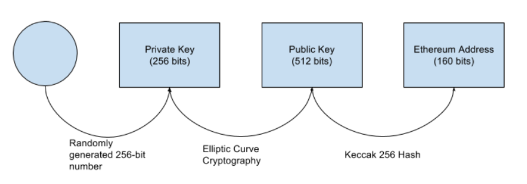
私钥 -> 公钥 -> 地址，过程均为不可逆的。
首先随机生成一个私钥（32字节），然后使用私钥通过椭圆曲线算法生成公钥（64字节），最后将公钥哈希得到账户地址（20字节）。
下面逐步说明各个步骤。
随机生成私钥¶
生成私钥的第一步，也是最重要的一步就是找到一个密码学安全的熵，即随机性来源。
私钥为32字节，故实际上就是在0-2256之间随机选取一个数值，只要选择的过程不可预测不可重复，那么通过什么方式获得这个数值并不重要。
具体来说，以太坊私钥不能为0，也不能超过一个接近于1.158*1077的数字。
故要生成私钥，实质是随机选取一个在上述有效范围内的256位的数值。
椭圆曲线算法生成公钥¶
在椭圆曲线运算中，质数的模乘运算是非常简单的，但是反向的模除运算却是几乎不可能的，这被称为离散对数难题，是以太坊等加密货币数字签名的基础。
公钥正是私钥通过椭圆曲线乘法得来，故只能单向计算，私钥可以算出公钥，但由公钥不能得到私钥。
公钥K = k * G，K为公钥，k为私钥，G为一个生成点。
以太坊使用跟比特币系统相同的椭圆曲线算法，称为secp256k1。使用了该标准定义的一种特殊的椭圆曲线和一系列的数学常量，公钥就是椭圆曲线上的一个满足椭圆曲线等式的(x，y)坐标，由x、y两个数值组成，通过私钥唯一确定。
x、y各32字节，故公钥为64字节，可能会看到65字节表示的公钥，这是由SECG所发布的行业标准的一种序列化编码方式，在最前面加一个字节的前缀，04表示公钥为非压缩格式，即完整存储了x和y的坐标各32字节。但是从secp256k1的椭圆曲线方式可以看到，只要知道其中一个坐标值，另外一个坐标值都是可以通过解方程得出的，因此可以只存储其中一个坐标，这样就可以节约32个字节，从而引入了压缩格式的公钥。如果为压缩格式，则前缀为02或03。
故非压缩格式的公钥65字节（后64字节为实际的公钥），压缩格式的公钥33字节。
哈希生成地址¶
将公钥进行哈希，即可得到地址。
对64字节的完整公钥使用Keccak-256算法来进行哈希，哈希结果的最后20字节即为对应私钥的账户地址。
哈希结果并不区分大小写，但我们可以发现很多地方，如etherscan中的地址是同时存在大小写的。
这是由于eip-55引入了checksum机制，通过修改地址中字母的大小写，可以校验地址的准确性，降低用户输入错误地址的风险。
keystore¶
keystore文件一般是JSON文件，实质上就是加密后的私钥。故keystore必须用对应密码解密后才能得到私钥，获取账户控制权。即 keystore + 文件密码 = 私钥。
使用keystore可以不用记住复杂的私钥，记住设置的密码即可控制对应的账户。
一般内容如下。
{
"address": "df5f03234385f576f8f69e85194a8e02315132f5",
"id": "e0aa3592-e854-43ed-92ae-2082cd012961",
"version": 3,
"crypto": {
"cipher": "aes-128-ctr",
"cipherparams": {
"iv": "caf873134967841a20a2e341fe4f2c16"
},
"ciphertext": "ca0cf572f6f5f6e4db7467430ee1b15e25082181a6002cf1d0d954e771b53395",
"kdf": "scrypt",
"kdfparams": {
"dklen": 32,
"n": 4096,
"p": 6,
"r": 8,
"salt": "a8cc9a642bebe14c32f4e2ed249dd4c30e21379abcccfc3fc0596d7c80b5de2c"
},
"mac": "2c529cb3be67518c41a3394fa4054e773449bcc34671389c17e453391ca31413"
}
}
存储了密文、加密算法以及所需的相关参数。
代码测试¶
下面使用代码来根据私钥生成公钥及对应账户地址，并进行验证。使用coincurve库进行椭圆曲线运算，pycryptodome库进行哈希运算。
import coincurve
from Crypto.Hash import keccak
test_priv = b'\x11'*32
# test_priv = b'\xff'*32
# test_priv = b'\x00'*32
test_pub = coincurve.PublicKey.from_secret(test_priv).format(compressed=False)
print(len(test_pub))
print(test_pub.hex())
test_addr = keccak.new(data = test_pub[1:], digest_bits = 256)
print(test_addr.digest()[-20:].hex())
'''
65
044f355bdcb7cc0af728ef3cceb9615d90684bb5b2ca5f859ab0f0b704075871aa385b6b1b8ead809ca67454d9683fcf2ba03456d6fe2c4abe2b07f0fbdbb2f1c1
19e7e376e7c213b7e7e7e46cc70a5dd086daff2a
'''
私钥全0或过大都会报错提示不在范围内，且生成公钥要设置compressed=False，不然默认生成压缩格式的公钥。可以看到非压缩格式的公钥为65字节，开头前缀为04，最后将公钥（不带前缀）进行keccak-256哈希运算，结果的最后20字节即为私钥对应的账户地址。
可以用现成的demo对ethereum-private-key-to-public-key和ethereum-private-key-to-address对结果进行测试，证明运算无误。
显然这样随意选取的简单的私钥是极不安全的。（但在etherscan中看到甚至还有交易记录）
BIP32：分层确定性钱包¶
一个人可能拥有多个账户，因此使用钱包来对多个账户进行管理。一般分为非确定性钱包和确定性钱包。
非确定性钱包（Nodeterministic Wallet）：钱包中的每个密钥都是从不同的随机数独立生成的，密钥彼此之间没有任何关系，这种钱包也被称为JBOK钱包（Just a Bunch Of Keys）。
确定性钱包（Deterministic Wallet）：其中所有的密钥都是从一个主密钥派生出来的，在该类型的钱包中，所有的密钥之间都是相互关联的，只要知道了生成主密钥使用的种子，就可以派生得到全部的密钥；在确定性钱包中，可以使用不同的密钥推导方式。目前最常用的推导方法是树状结构，即分层确定性钱包（Hierarchical Deterministic Wallets），在BIP32中提出。
显然使用分层确定性钱包，用户只需要记住种子，就可以派生出多个账户来使用，不需要麻烦的备份管理众多账户的私钥。
通过种子生成主密钥，主密钥再逐层推导得到众多的子密钥。基本过程如下。
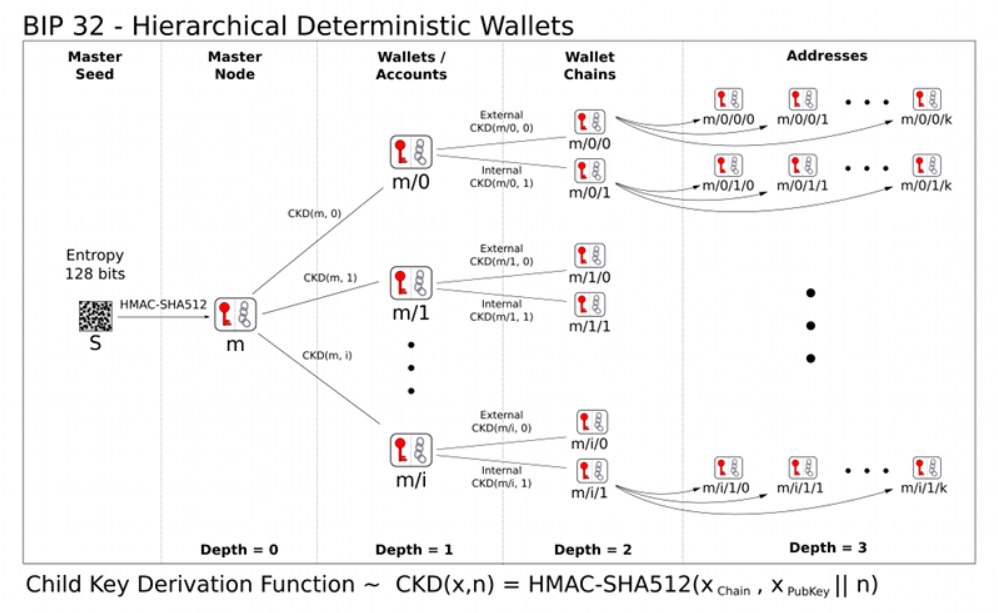
种子 -> 主密钥 -> 各层子密钥。
首先随机生成一个种子（16-64字节），然后对种子进行哈希生成主密钥和主链码（各32字节），根据密钥和链码使用密钥派生函数即可逐层派生子密钥。
下面结合python模块bip32代码进行说明。
种子生成主密钥¶
由seed可推导出对应的全部子密钥，即一个seed可生成管理一串私钥，故这里seed相当于前面生成单个账户的私钥，需要确保其随机性，长度在16-64字节之间，建议为32字节。
生成足够随机安全的种子后，对其进行HMAC-SHA512哈希，得到64字节的哈希结果，前32字节即为主私钥，可以生成对应的33字节的压缩主公钥。后32字节为主链码，作为熵在后续扩展密钥过程中使用。具体如下图所示。
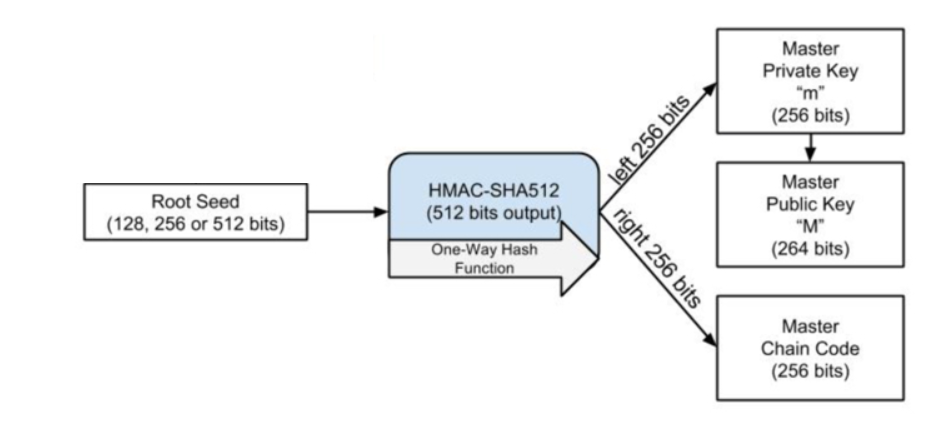
bip32中的相关代码如下。
# bip32.py
def from_seed(cls, seed, network="main"):
"""Get a BIP32 "wallet" out of this seed (maybe after BIP39?)
:param seed: The seed as bytes.
"""
secret = hmac.new("Bitcoin seed".encode(), seed, hashlib.sha512).digest()
return BIP32(secret[32:], secret[:32], network=network)
# utils.py
def _privkey_to_pubkey(privkey):
"""Takes a 32 bytes privkey and returns a 33 bytes secp256k1 pubkey"""
return coincurve.PublicKey.from_secret(privkey).format()
方法from_seed接受种子seed作为参数，然后对种子进行HMAC-SHA512哈希，前32字节作为主私钥，后32字节作为主链码，来生成BIP32对象。后续调用_privkey_to_pubkey函数，使用coincurve库来生成对应的压缩公钥。
有了主私钥（公钥）和主链码，即可派生后续一层层的子密钥。
子密钥派生（Child key derivation，CKD）¶
派生子密钥的方法有两种：父私钥->子密钥，父公钥->子密钥。具体如下图所示。
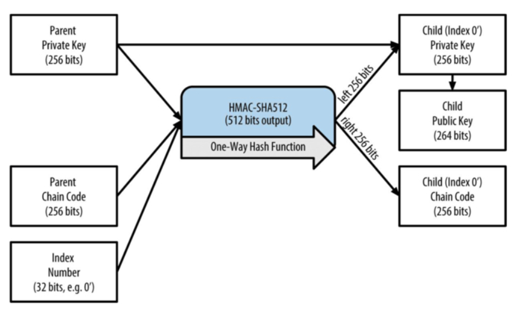
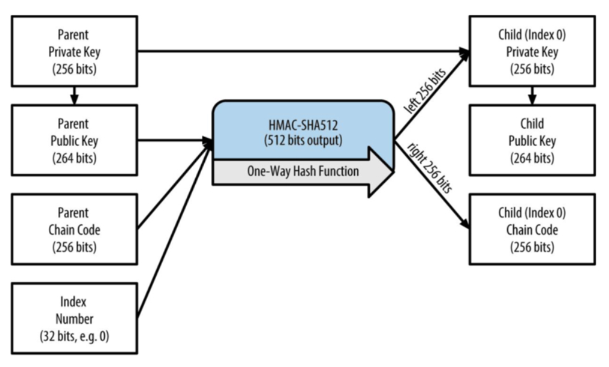
即父私钥/公钥+父链码，再加一个索引号，即可调用哈希函数生成子密钥和对应链码。使用父私钥为强化衍生，使用父公钥为常规衍生。强化衍生不会将父级链码暴露到不安全的环境下，所以相较于常规衍生更安全。
为了区分两种不同的派生方案，在索引号也进行了区分，索引号小于231用于常规衍生，而231到232-1用于强化衍生，为了方便表示，索引号 i' 就表示索引号 231+i，如0x80000000表示为0'。
路径m/5/4'表示主密钥的第五个常规衍生的子密钥的第4个强化衍生的子密钥。
由父密钥衍生子密钥可以对密钥树进行深度扩展，使用不同的索引号可以进行水平扩展，从而可以无限的生成私钥，即一个种子生成多个账户。
其中子密钥不能推导出同层级的兄弟密钥，也不能推出父密钥。如果没有子链码也不能推导出孙密钥。
bip32中的相关代码如下。
# bip32.py
def get_extended_privkey_from_path(self, path):
"""Get an extended privkey from a derivation path.
:param path: A list of integers (index of each depth) or a string with
m/x/x'/x notation. (e.g. m/0'/1/2'/2 or m/0H/1/2H/2).
:return: chaincode (bytes), privkey (bytes)
"""
if self.privkey is None:
raise PrivateDerivationError
if isinstance(path, str):
path = _deriv_path_str_to_list(path)
chaincode, privkey = self.chaincode, self.privkey
for index in path:
if index & HARDENED_INDEX:
privkey, chaincode = _derive_hardened_private_child(
privkey, chaincode, index
)
else:
privkey, chaincode = _derive_unhardened_private_child(
privkey, chaincode, index
)
return chaincode, privkey
# utils.py
def _derive_unhardened_private_child(privkey, chaincode, index):
"""A.k.a CKDpriv, in bip-0032
:param privkey: The parent's private key, as bytes
:param chaincode: The parent's chaincode, as bytes
:param index: The index of the node to derive, as int
:return: (child_privatekey, child_chaincode)
"""
assert isinstance(privkey, bytes) and isinstance(chaincode, bytes)
assert not index & HARDENED_INDEX
pubkey = _privkey_to_pubkey(privkey)
# payload is the I from the BIP. Index is 32 bits unsigned int, BE.
payload = hmac.new(
chaincode, pubkey + index.to_bytes(4, "big"), hashlib.sha512
).digest()
try:
child_private = coincurve.PrivateKey(payload[:32]).add(privkey)
except ValueError:
raise BIP32DerivationError(
"Invalid private key at index {}, try the " "next one!".format(index)
)
return child_private.secret, payload[32:]
def _derive_hardened_private_child(privkey, chaincode, index):
"""A.k.a CKDpriv, in bip-0032, but the hardened way
:param privkey: The parent's private key, as bytes
:param chaincode: The parent's chaincode, as bytes
:param index: The index of the node to derive, as int
:return: (child_privatekey, child_chaincode)
"""
assert isinstance(privkey, bytes) and isinstance(chaincode, bytes)
assert index & HARDENED_INDEX
# payload is the I from the BIP. Index is 32 bits unsigned int, BE.
payload = hmac.new(
chaincode, b"\x00" + privkey + index.to_bytes(4, "big"), hashlib.sha512
).digest()
try:
child_private = coincurve.PrivateKey(payload[:32]).add(privkey)
except ValueError:
raise BIP32DerivationError(
"Invalid private key at index {}, try the " "next one!".format(index)
)
return child_private.secret, payload[32:]
方法get_extended_privkey_from_path获取指定路径下的扩展私钥，即BIP32中定义的CKDpriv函数，通过父私钥得到子私钥。
使用for循环逐层衍生，其中HARDENED_INDEX即0x80000000，用于判断是强化衍生还是常规衍生。_derive_unhardened_private_child和_derive_hardened_private_child即具体实现了BIP32中定义的Private parent key → private child key衍生逻辑。
# bip32.py
def get_extended_pubkey_from_path(self, path):
"""Get an extended pubkey from a derivation path.
:param path: A list of integers (index of each depth) or a string with
m/x/x'/x notation. (e.g. m/0'/1/2'/2 or m/0H/1/2H/2).
:return: chaincode (bytes), pubkey (bytes)
"""
if isinstance(path, str):
path = _deriv_path_str_to_list(path)
if _hardened_index_in_path(path) and self.privkey is None:
raise PrivateDerivationError
chaincode, key = self.chaincode, self.privkey
pubkey = self.pubkey
# We'll need the private key at some point anyway, so let's derive
# everything from private keys.
if _hardened_index_in_path(path):
for index in path:
if index & HARDENED_INDEX:
key, chaincode = _derive_hardened_private_child(
key, chaincode, index
)
else:
key, chaincode = _derive_unhardened_private_child(
key, chaincode, index
)
pubkey = _privkey_to_pubkey(key)
# We won't need private keys for the whole path, so let's only use
# public key derivation.
else:
for index in path:
pubkey, chaincode = _derive_public_child(pubkey, chaincode, index)
return chaincode, pubkey
# utils.py
def _derive_public_child(pubkey, chaincode, index):
"""A.k.a CKDpub, in bip-0032.
:param pubkey: The parent's (compressed) public key, as bytes
:param chaincode: The parent's chaincode, as bytes
:param index: The index of the node to derive, as int
:return: (child_pubkey, child_chaincode)
"""
assert isinstance(pubkey, bytes) and isinstance(chaincode, bytes)
assert not index & HARDENED_INDEX
# payload is the I from the BIP. Index is 32 bits unsigned int, BE.
payload = hmac.new(
chaincode, pubkey + index.to_bytes(4, "big"), hashlib.sha512
).digest()
try:
tmp_pub = coincurve.PublicKey.from_secret(payload[:32])
except ValueError:
raise BIP32DerivationError(
"Invalid private key at index {}, try the " "next one!".format(index)
)
parent_pub = coincurve.PublicKey(pubkey)
try:
child_pub = coincurve.PublicKey.combine_keys([tmp_pub, parent_pub])
except ValueError:
raise BIP32DerivationError(
"Invalid public key at index {}, try the " "next one!".format(index)
)
return child_pub.format(), payload[32:]
方法get_extended_pubkey_from_path获取指定路径下的扩展公钥，涵盖BIP中定义的CKDpub函数，通过父公钥得到子公钥。
首先根据路径判断是否存在强化衍生，如果存在则必须通过私钥来生成公钥，故先得到扩展私钥，再调用_privkey_to_pubkey函数生成对应公钥，逐层衍生，最终得到对应路径下的公钥。如果不存在强化衍生，则可以只使用父公钥来得到子公钥，调用_derive_public_child函数，具体实现了BIP32中定义的Public parent key → public child key衍生逻辑。
整个树状密钥派生结构可如下图表示。
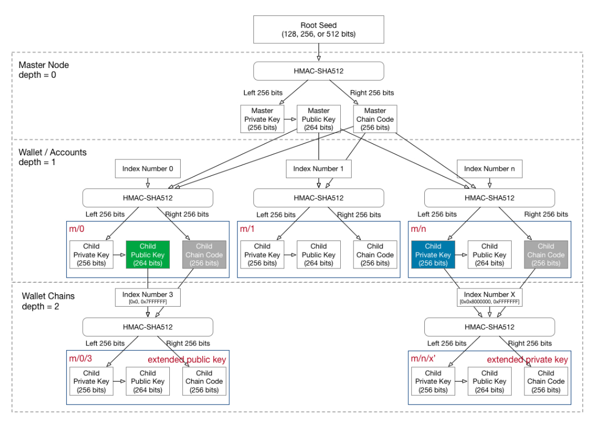
其中右下角为强化衍生，其余均为常规衍生。
代码测试¶
可使用如下代码对BIP32进行测试。
from bip32 import BIP32
from base58 import *
seed = b'\x11' * 32
bip32 = BIP32.from_seed(seed)
print('master private key:', bip32.get_xpriv())
print('master public key:', bip32.get_xpub())
priv_key = bip32.get_privkey_from_path("m/5/4'")
pub_key = bip32.get_pubkey_from_path("m/5/4'")
print('privkey from m/5/4\':', priv_key.hex())
print('pubkey from m/5/4\':', pub_key.hex())
其中主扩展私钥和主扩展公钥的输出分别为xprv和xpub开头的字符串，这是由BIP32定义的Serialization format。
BIP39：使用助记词生成确定性钱包¶
根据BIP32，用户只需要保存一个种子即可控制其对应的一系列账户。但显然一长串的十六进制种子字符串仍旧不是一个很方便的数据，不利于记录且容易记错，因此产生了BIP39，BIP39提出使用助记词生成确定性钱包，即通过一组便于记忆的单词来生成种子，从而让种子的记忆备份更友好。
BIP39说明了如何生成助记词，以及如何将生成的助记词转化成一个二进制种子。如下图所示。
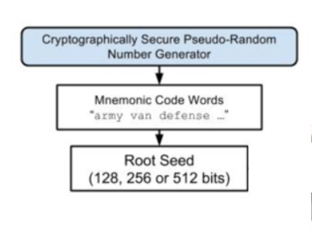
种子即可直接用于BIP32，生成管理一系列账户。
下面结合python模块mnemonic代码进行说明。
熵生成助记词¶
熵生成助记词的基本过程如下图所示。
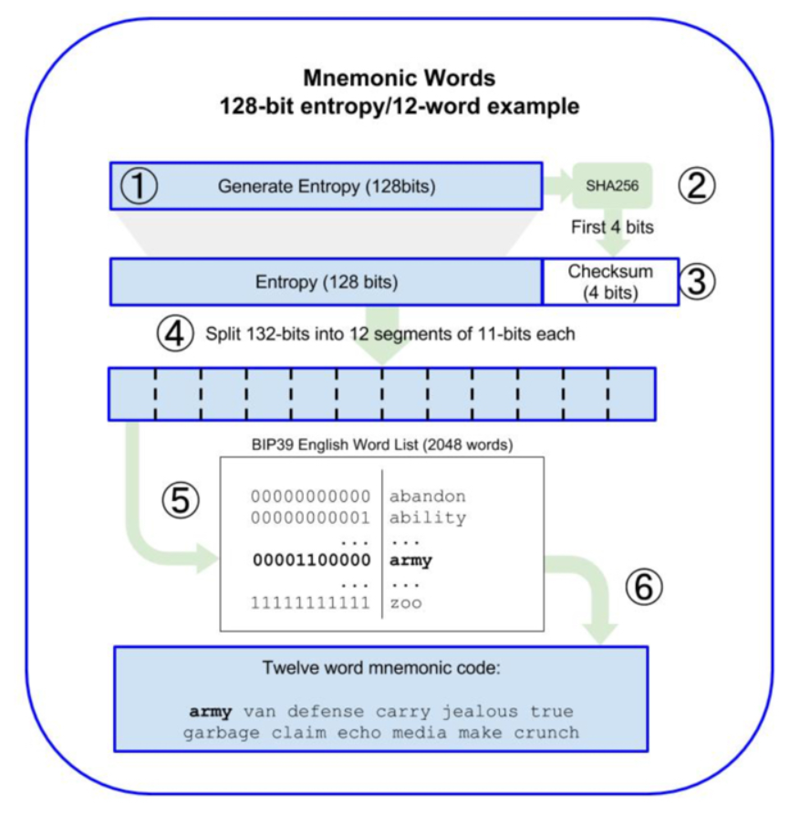
首先第一步，还是要生成一个密码学安全的熵，即随机性来源，用于生成助记词，因此这个数的选取也要足够随机足够安全。
熵的长度记为ENT，其取值范围为128-256位（16到32字节）。按步长32位，可为[128, 160, 192, 224, 256]（16、20、24、28、32字节）。上图的生成过程就是使用128位的熵。
之后对熵进行SHA256哈希运算，并取出哈希结果的前N位（ENT/32，如：熵长128位，则N = 4）作为熵的校验和（Checksum）。
然后将Checksum添加到熵的尾部，并将该新得到的序列按照11位一段进行分隔，这样对于128位熵长的序列就会生成12段（132/11=12），将每段11位对应的值映射到一个预定义的2048个单词的表中（211 = 2048），即可得到一串对应的单词，128位的熵最终得到12个单词。
显然不同熵长有不同的Checksum长度，最终生成的助记词的长度也不同，具体对应关系如下表。
| Entropy(bits) | Checksum(bits) | Entropy+Checksum(bits) | Mnemonic length(words) |
|---|---|---|---|
| 128 | 4 | 132 | 12 |
| 160 | 5 | 165 | 15 |
| 192 | 6 | 198 | 18 |
| 224 | 7 | 231 | 21 |
| 256 | 8 | 264 | 24 |
mnemonic模块的实现代码如下。
def generate(self, strength: int = 128) -> str:
if strength not in [128, 160, 192, 224, 256]:
raise ValueError(
"Strength should be one of the following [128, 160, 192, 224, 256], but it is not (%d)."
% strength
)
return self.to_mnemonic(os.urandom(strength // 8))
def to_mnemonic(self, data: bytes) -> str:
if len(data) not in [16, 20, 24, 28, 32]:
raise ValueError(
"Data length should be one of the following: [16, 20, 24, 28, 32], but it is not (%d)."
% len(data)
)
h = hashlib.sha256(data).hexdigest()
b = (
bin(int.from_bytes(data, byteorder="big"))[2:].zfill(len(data) * 8)
+ bin(int(h, 16))[2:].zfill(256)[: len(data) * 8 // 32]
)
result = []
for i in range(len(b) // 11):
idx = int(b[i * 11 : (i + 1) * 11], 2)
result.append(self.wordlist[idx])
if self.language == "japanese": # Japanese must be joined by ideographic space.
result_phrase = u"\u3000".join(result)
else:
result_phrase = " ".join(result)
return result_phrase
方法generate随机生成一组助记词，使用os.urandom()来生成熵，且限定了熵长为[128, 160, 192, 224, 256]。
之后调用to_mnemonic方法根据随机熵生成助记词，实现与前面的描述一致。
助记词生成种子¶
助记词生成种子的基本过程如下图所示。
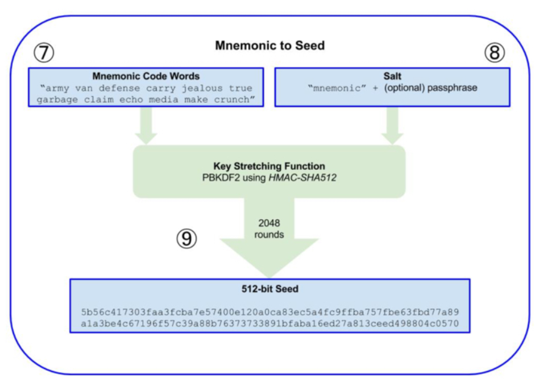
主要使用密钥拉伸（Key stretching）算法PBKDF2来生成种子。
PBKDF2基本原理是通过一个为随机函数（如这里使用的HMAC-SHA512），把助记词明文和盐值作为输入参数，然后重复进行多次运算（这里2048轮），最终产生生成一个更长的（512位）密钥种子。
密钥拉伸函数需要两个参数：助记词和盐（salt）。盐可以提高暴力破解的难度。盐由常量字符串"mnemonic"及一个可选的密码组成，不设置密码则salt就为"mnemonic"。若使用了不同的密码，则同一组助记词通过密钥拉伸函数会得到不同的种子。
这里盐值中设置的密码可以作为一个额外的安全因子来保护种子，即使助记词的备份被窃取，也可以保证钱包的安全。（当然你也要记得自己加了怎样的盐）
mnemonic模块的实现代码如下。
def to_seed(cls, mnemonic: str, passphrase: str = "") -> bytes:
mnemonic = cls.normalize_string(mnemonic)
passphrase = cls.normalize_string(passphrase)
passphrase = "mnemonic" + passphrase
mnemonic_bytes = mnemonic.encode("utf-8")
passphrase_bytes = passphrase.encode("utf-8")
stretched = hashlib.pbkdf2_hmac(
"sha512", mnemonic_bytes, passphrase_bytes, PBKDF2_ROUNDS
)
return stretched[:64]
方法to_seed根据助记词生成种子。可以看到使用的salt为"mnemonic"+passphrase，密码默认为空，最后调用pbkdf2函数生成64字节（512位）的种子。
代码测试¶
使用如下代码对BIP32及BIP39进行测试。
from mnemonic import Mnemonic
from bip32 import BIP32
mnemo = Mnemonic("english")
words = mnemo.generate(strength = 256)
print('mnemonic:', words)
seed = mnemo.to_seed(words, passphrase="")
print('seed:', seed.hex())
master_key = mnemo.to_hd_master_key(seed)
print('master_key from mnemo:', master_key)
bip32 = BIP32.from_seed(seed)
priv_key = bip32.get_xpriv_from_path("m/5/4'")
pub_key = bip32.get_xpub_from_path("m/5/4'")
print('xpriv from m/5/4\':', priv_key)
print('xpub from m/5/4\':', pub_key)
'''
mnemonic: find wool wrestle thought head shoe mobile among find top eager sniff depart zero combine about else later gaze stay journey depth shaft coil
seed: 963f67803815c1c97784dda18260f467e01e58b6d39171357c124fb1e2130487a94869f0b66298346a6c894797bb6bd988cf76e2bc2b85dc9dbcf0c0603116cf
master_key from mnemo: xprv9s21ZrQH143K34L3cV5waZgj6FN9KznoPbNYzRJxcjMvWjZomTJN2JcJcThXK37wriXYsaxqZMVyCsfypR9AbFMZYw4p2rFRbjvEKqLfQay
xpriv from m/5/4': xprv9wcQaJMMuBa2wJ33Z1Tg3HAqUE1WFYDxG5bsvuTMN1HBtLMkaVKd5U8SLz5QC4Z6kGNDEhLRKs9yhRYpLHnjmsfNeYbUteM5F1EH3oEdrjK
xpub from m/5/4': xpub6AbkyotFjZ8L9n7Wf2zgQR7a2FqzezwodJXUjHrxvLpAm8gu82dsdGSvCHvVVJ4YC2B94L7xTgvcZLnSRQdJu7R9JscZxUZuKYfcAq1YXuU
'''
可使用在线助记词转换器对结果进行检查.
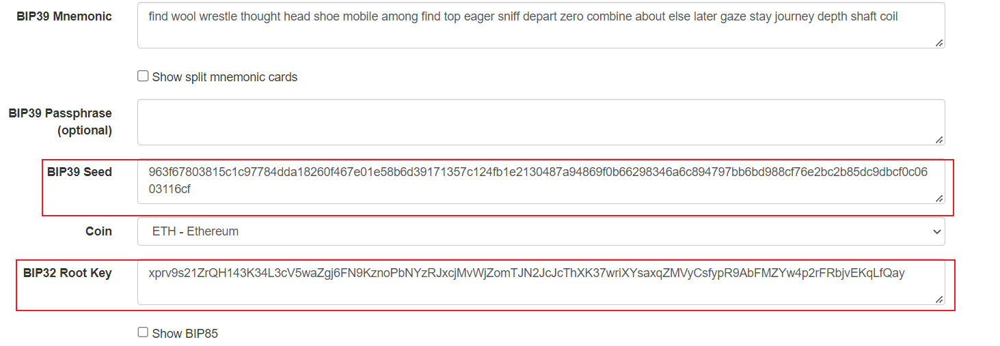
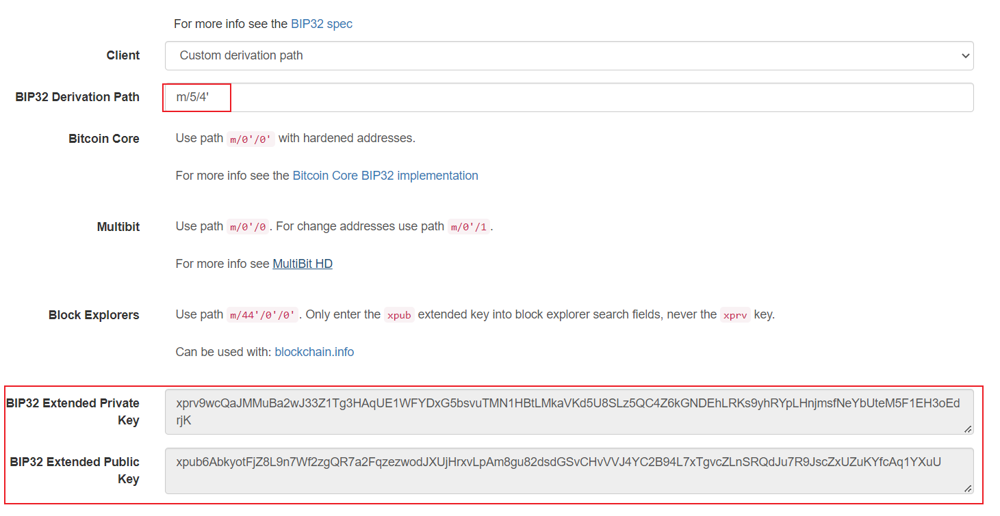
结果无误。
BIP44：确定性钱包的多账户层次结构¶
根据BIP32，在密钥树状结构中，每个子密钥都有自己的路径，但并没有明确规定每个路径的具体使用途径，使得钱包开发者可以自定义自己的节点结构，这就很容易导致没有办法100%保证使用了HD钱包A的用户将自己的助记词/种子导入到HD钱包B中还能正常工作；也没有办法保证HD钱包支持多个链的私钥管理。
由此产生了BI433和BIP44，提出确定性钱包的多账户层次结构，对BIP32的子节点派生路径的模式、每段的含义做出具体的规定，同时也扩展了对多币种的支持。
事实上现如今的HD钱包都遵循了BIP32和BIP44的规定，也只有遵循了这两个规范的钱包应用才是大概率完全兼容的。
路径级别¶
BIP44指定了包含5个预定义树状层级的结构：
m / purpose' / coin_type' / account' / change / address_index
m是固定的，purpose也是固定的，值为44（44'即0x8000002C），代表遵循BIP44。
coin_type代表的是币种，0代表比特币，1代表比特币测试链，60代表以太坊，完整的币种列表可见slip44。
account将密钥空间拆分为独立的用户身份，可自主用于不同的功能，如专门用于储蓄的账户，专门用于捐赠的账户。
change值为常量0或1。常量0用于外部链，常量1用于内部链。外部链用于在钱包之外可见的地址（例如用于接收付款）。内部链用于在钱包之外不可见的地址，并用于返回交易更改。因此一般为0。
address_index就是地址索引，从0开始，代表生成第几个地址。
以太坊钱包也同样遵循BIP44，路径为m/44'/60'/a'/0/n，其中60即为以太币对应的coin_type，a表示帐号，n表示生成的第n个地址。
代码测试¶
使用如下代码进行测试，根据助记词输出以太坊对应路径的账户地址。
from mnemonic import Mnemonic
from bip32 import BIP32
import coincurve
from Crypto.Hash import keccak
words = 'your mnemonic'
def get_addr_by_path(path):
global words
mnemo = Mnemonic("english")
seed = mnemo.to_seed(words, passphrase="")
bip32 = BIP32.from_seed(seed)
privkey = bip32.get_privkey_from_path(path)
pubkey = coincurve.PublicKey.from_secret(privkey).format(compressed=False)
addr = keccak.new(data = pubkey[1:], digest_bits = 256)
return addr.digest()[-20:].hex()
print(get_addr_by_path("m/44'/60'/0'/0/0"))
print(get_addr_by_path("m/44'/60'/0'/0/1"))
将输出结果与metamask钱包中的地址进行比较，可以看出钱包中生成的第一个账户路径就是m/44'/60'/0'/0/0，第二个就是m/44'/60'/0'/0/1，以此类推。
总结¶
回顾一下发展过程，为了避免管理多个账户，出现了BIP32分层确定性钱包，从而可以从一个种子生成管理无限的账户，而种子并不方便，因此出现了BIP39，可以从助记词生成种子，继而生成分层确定性钱包，更加便利，而BIP32并没有明确规定生成的树状密钥层次结构各层的具体用途，因此可能导致各钱包实现不同，也无法支持多币种，因此出现了BIP44，给树状密钥结构的路径赋予了明确的意义，也解决了多币种问题。
整个流程基本如下图所示。
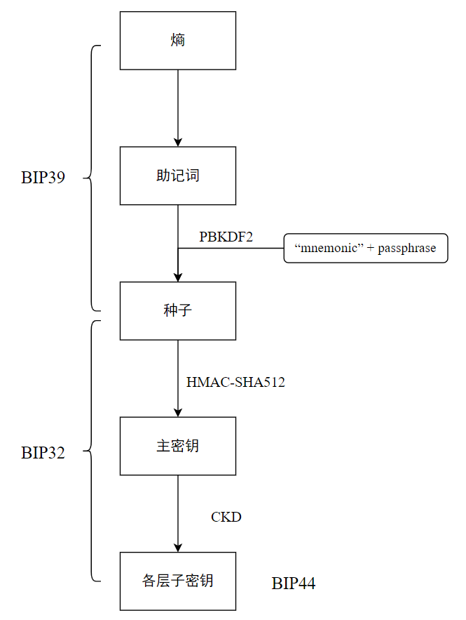
最后区分一下密码的概念，助记词生成种子使用的密码passphrase用作PBKDF2算法的盐，可以有也可以没有，目前主流钱包的助记词是无密码的；keystore的密码是用于解密加密文件得到私钥的；metamask创建时输入的密码是钱包密码，用于解密存储在本地的助记词等关键数据，类似于keystore的密码。